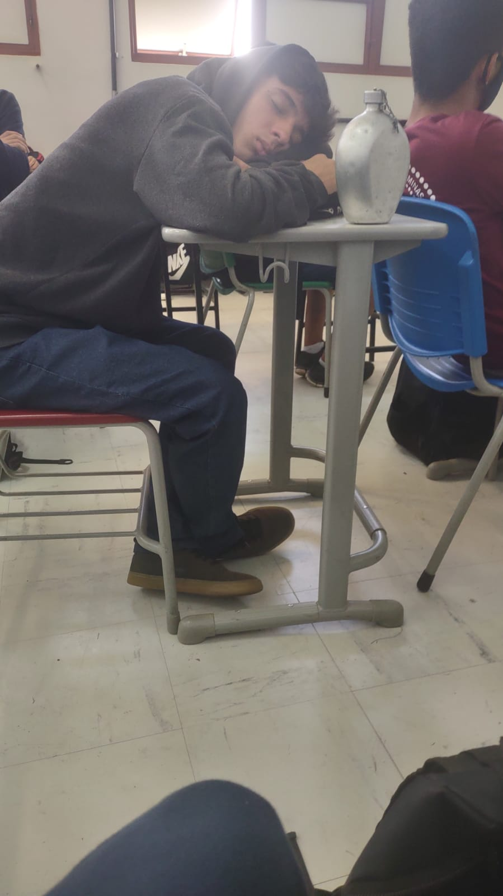
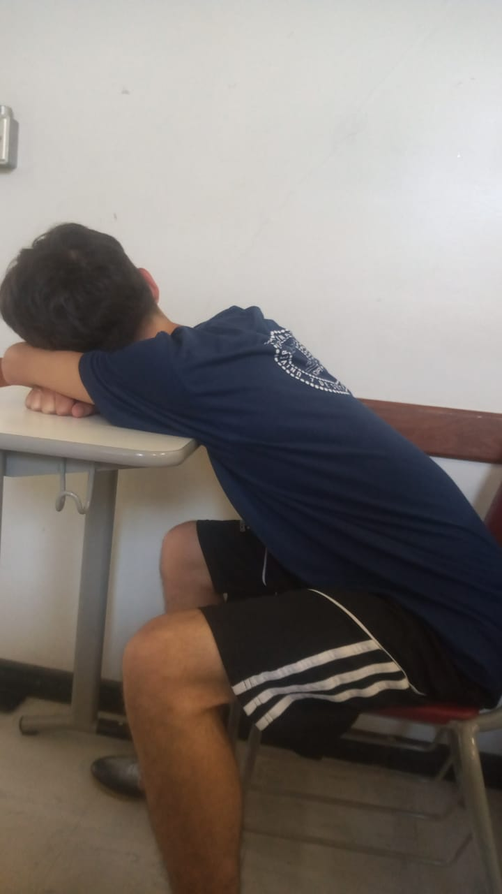

O que não te contaram sobre o zé pequeno
Prates nasceu no dia 29 de outubro de 2005, sua emocionante história de superação é uma história tão longa que o próprio zé pequeno se perdeu no personagem.
Mas a historia não termina por aí, Geromel nascido debaixo Viaduto Santa Tereza e vindo de uma família de extrema pobreza, ao seus 10 anos de idade deu a volta por cima e se tornou um empresário multimilionário, dono de gigantes multinacionais como Apple, Google e Facebook.
Com 15 anos tomou a decisão mais importante de sua vida, decidiu abandonar sua vida luxuosa para entrar no coltec como um estudante normal
E atualmente, como ele está?
 Atualmente Prates se encontra como um estudante comum, abandonou sua mansão de 318 milhões de dólares e vivem em Vespasiano agora.
Estuda diariamente no coltec na turma 203 e faz parte do melhor curso do coltec, ou seja, informática.
Coisas que ele gosta
- Maconha
- Djamba
- Cannabis
Coisas que ele não gosta
- Golden shower
- Gays
- Negros
- Gordos
- Pobres